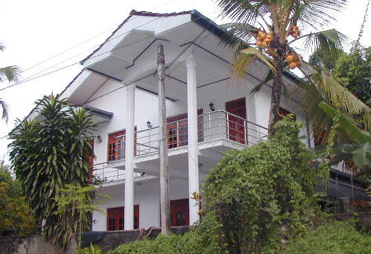
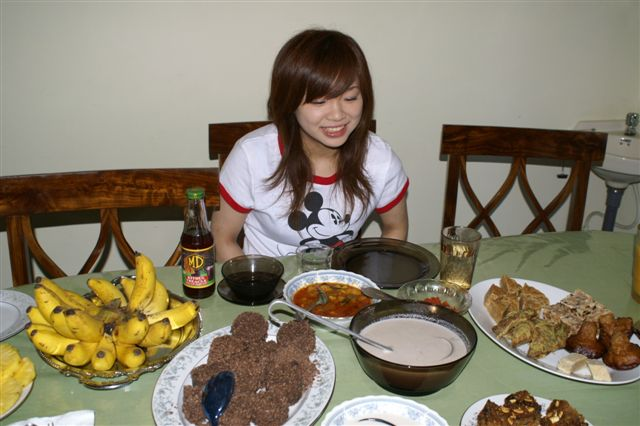
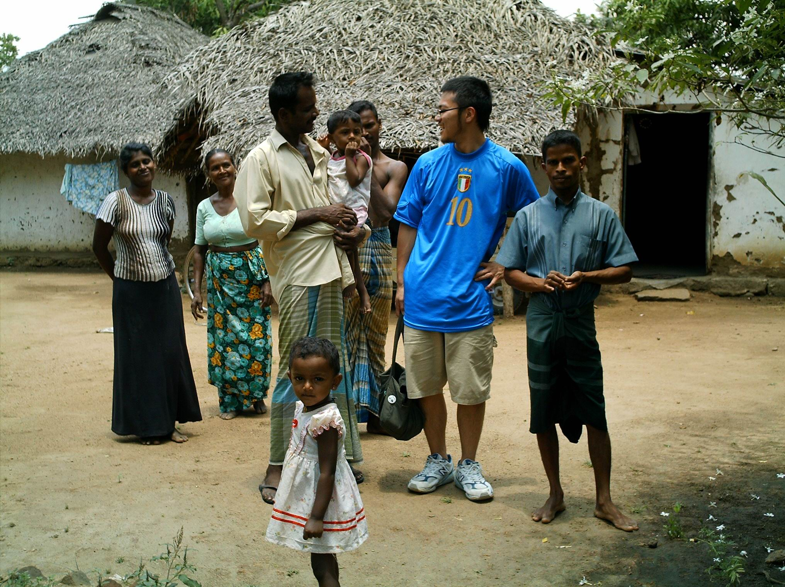
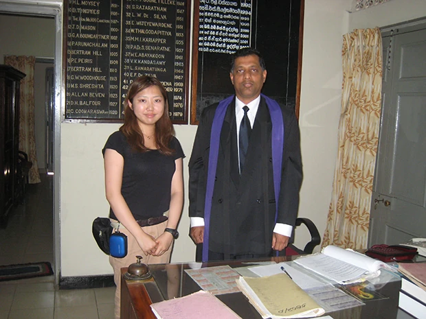

SRI LANKA コロンボ郊外・ホームステイ
英語が「日常の言葉」に近づく
海と緑の島で
旅行だけでは決して味わえない一般家庭での滞在。公用語のシンハラ語に加え、英語が生活に根付いています。初めて海外に行く方も、個人レッスンと日々の生活の英語の積み重ねで、少しずつヒアリングと表現の幅を広げていけます。ほとんどの方が、お一人でのご参加です。
- 英語が生活に根付いた環境
- 個人レッスン＋ホームステイ
- 24時間日本語サポート
スリランカ留学について
スリランカ留学では、旅行では味わえない一般家庭でのホームステイと、担当教師によるマンツーマン英語レッスンが基本です。英語が準公用語のため、生活のなかで使われる場面も多く、レッスン以外の時間にも英語に触れやすい環境が特徴です。Beインターナショナルは22年以上、コロンボ郊外を中心にプログラムを運営してきました。
初めて海外に行く方や、お一人での参加に不安がある方でも、個人レッスンと日々の生活の積み重ねで、少しずつヒアリングとスピーキングの幅を広げていける方が多くいらっしゃいます。参加費用にはホームステイ滞在・ステイ先での毎日3食・低開発村視察が含まれ、現地受入団体 JASRI が24時間日本語でサポートいたします。
スリランカという国
インド洋に浮かぶ島国で、低地から中部の山岳地まで、緑豊かな風景が続きます。海沿いの賑やかな街から、穏やかな内陸の集落まで、景色やリズムは変わります。スリランカ留学を選ぶ方のなかには、熱帯気候と英語が広く使われている環境に魅力を感じる方も多くいらっしゃいます。
スリランカでは、多くの人が英語を話すことができ、同じスリランカ人同士でも日常的に英語で会話する方もおられます。スリランカ留学の魅力のひとつは、この「生活の中の英語」に、ホームステイ先やレッスンを通じて触れられることです。

スリランカとは｢光輝く島｣の意
1972年に国名が「スリランカ」となりました。語源には「輝く島」などの説があり、海に囲まれた島国としてのイメージと重なります。旧称のセイロンは紅茶の産地として知られるほか、ルビーやサファイアなどの宝石の産地としても名高い国です。
熱帯の島・スリランカ
スリランカは、インド洋に浮かぶ小さな島（北海道より一回り小さい）です。赤道と北回帰線に挟まれたところにあるため、年間の平均気温は、27度と暑いです。 四季はなく、雨季と乾季になります。一方でヌワラエリヤのような高地では朝夕はひんやりとします。低地にはジャングルが広がり、ゾウやサル、鳥類やイグアナなどの野生生物にも出会えます。
世界遺産が８つ
仏教文化の影響が深く、古都や石窟寺院など、世界遺産に登録された文化遺産・自然遺産が８つあります。寺院に行く際には、肌の露出を控えた服装でお出かけください。
英語が使われる場面
スリランカは、130年もの間、英国領だった為、英語は公用語の一つとして位置づけられ、ビジネスの世界や、上流階級では、母国語のシンハラ語ではなく、英語で会話をします。
ビザが必要（インターネットで取得）
ビザ取得は、スリランカビザETAで手続きできます。
現在は、日本のパスポートをお持ちの方は、30日間のビザが無料となっています。
ETA取得は、スリランカ到着前までに義務となっていますので、事前にご自身で申請手続きしていただけますようお願いいたします。
※パスポートはスリランカ入国時点で６ヶ月以上の残存期間が必要です。

安心して滞在するために
ホームステイ先地域の治安と津波災害の影響
皆様にホームステイをしていただく場所は、これまでテロなどが一度も起きたことのない安全な住宅街を選出しております。
その為、これまで弊社のお客様はもちろんのこと、ホストファミリーにおいてもテロに巻き込まれたことはございませんのでご安心くださいませ。
ただし、現地においては、盗難等も含め、「自分の身は自分で守る」という自覚を持ち、十分ご注意の上、行動いただきますよう、お願い申し上げます。
また、2004年の津波災害時は、当社のお客様およびホストファミリーに被害は一切ありませんでした。多くのホームステイ先は海岸から直線距離にしておおむね20〜30km程度内陸にあり、今後も津波の影響は受けにくい立地です。
スリランカの安全情報は、外務省 海外安全ホームページ でご確認ください。
ホームステイ
参加費用には、個人レッスン料に加え、ホームステイでの滞在費と、ホームステイ先での毎日3食の家庭料理、そして低開発村視察が含まれています。ホストファミリーと日々の小さなコミュニケーションを重ねながら、スリランカでの生活を存分に味わっていただけます。
滞在先の目安
皆さまの滞在されるホームステイ先は、治安の安定したコロンボ郊外のミヌワンゴダやワラカポーラ地区（コロンボから約20km〜40km）の中流クラス以上のご家庭が中心です。幼いお子さまは英語が話せない場合もありますが、英語を話せる家族の多い家庭を選出しています。
ホームステイ先の一例
下記は、ホームステイ先の一例です。家の大きさ・日当たり・設備は、家庭によってさまざまです。ご出発までの流れも併せてご覧ください。
お部屋
個室に寝具・机・いすが用意されています。


食事
スパイスで煮込んだものを「カレー」と呼び、家庭では米を主食に、豆や野菜、魚や肉をスパイスで煮込んだカレーが並びます。
香辛料は、伝統医学・アーユルヴェーダとも結びついた文化として親しまれています。
どうしても口に合わない場合は、食材をご自身で購入して調理することも可能です。
台所を使うときやお手伝いをする場合はホストファミリーにお声がけください。


果物は季節によって価格が大きく変動します。季節外れのものは入手しにくく、たとえ見つけたとしても非常に高価になるため、ホストファミリーに無理に求めることのないようご理解をお願いします。
バスルーム
ご使用の際はホストファミリーに一声おかけください。スリランカは、一年中暑いため、お湯を浴びるという習慣がありません。そのため、多くの家庭は水シャワーです。お湯をご希望の場合はホストファミリーにお申し出ください。
その他、現地で生活する上での注意事項を 現地生活の基礎知識 にまとめていますので、ご覧ください。
破損・体調不良の際
万が一、家の中のものを壊してしまったり、具合が悪くて病院にかかったりした場合は、あらかじめ加入している海外旅行保険で対応して下さい。
現地到着から帰国まで
空港のお出迎えからホームステイ先、日々の過ごし方、帰国までの流れです。日本を出発されるまでの手続きの概要は、ご出発までの流れをご覧ください。
1. スリランカ到着
コロンボの空港では、現地受入団体・Japan SriLanka Research Institute（JASRI）の者がお出迎えします。
両替をする場合は税関を出た後、到着フロアの銀行窓口で行ってください。
そのまま到着ロビーの外へ出ていただきますと、現地受入団体の者が皆さまのお名前を大きく書いたボードを持ち、お待ちしております。
2. ホームステイ先へ
JASRIの車でホームステイ先へ送迎します。ホストファミリーと初めてのご対面です。 自己紹介をし、そのご家庭でのルールなどをご確認ください。
3. レッスンの始まり
英語教師がホームステイ先に訪れ、初日にレベルチェックテストを行います。上達の近道は「話すこと」。間違えてあたりまえと思って、たくさん話しましょう。
4. 日々の生活
レッスンのない時間帯やお休みの日は、英語の勉強やボランティア活動、ホストファミリーや新しくできた友達と交流や観光などをしてスリランカ生活を満喫してください。
また、ホストマザーからスリランカ料理レッスンを無料で受けることができますので、スリランカのおいしい家庭料理を教わってください。
ステイ先では、いつでもおいしいスリランカ紅茶（ミルクティー）をいれてもらえます。たっぷりのミルクと少し多めのお砂糖が味の決め手です。
5. カントリーサイド・低開発村視察
スリランカのカントリーサイド・低開発村を訪れ、地元の方々と交流します。学びの機会を得にくい子どもや若者に出会うことも多く、農業や裁縫といった暮らしの工夫と、伝統的な村の日常に触れながら、スリランカの別の表情を感じる時間になります。
電気がやっと使えるようになった素朴な村々で、新しいことにチャレンジをして、努力と工夫を重ねながら、一生懸命に働く人々の笑顔に、思わず励まされます。


日程は、レッスンのない日に日帰りで行います。具体的な日時は、到着後に現地受入団体からご連絡します。
現地受入団体の者が車で皆さまをお迎えにあがり、お帰りの際まで同行させていただきます。 同時期に他の参加者がいらっしゃる場合は一緒に行きます。
昼食は、地元の方が利用するレストランもしくは現地のお弁当でとります。その際の食事代は、料金に含まれております。
6. レッスン最終日
教師・友人との最終日の日程を互いに確認しておきましょう。
7. 帰国に向けて
現地受入団体に、帰りの飛行機の時間と迎えに来てほしい時間をあらかじめご連絡してください。空港でおみやげを買う場合は、早めに空港に着くようにした方が良いでしょう。
個人レッスンと、日々の目安
全コース、担当の先生による個人レッスンとなります。1日あたりのレッスン時間は4～6時間です。
下のタイムラインは目安です。実際のスケジュールにより異なります。
英語教師について、欠席と振替、レッスン内容
英語教師について
スリランカ人の英語教師は、学校の教員として現役で英語を教えていらっしゃる方や、自宅に英語の教室を持ち塾を開いている方など、経験豊富な方を選定しています。
レッスンの欠席・振替
- 出発日の10日前までに、一部レッスンの欠席が事前に分かっている場合は、送金手数料を差し引いたうえで、該当レッスン料を返金いたします。お申込み時点で欠席が確定している場合は、できるだけ早めにお申し出ください。
- 渡航後は、レッスン実施日の前日（月曜日の欠席は金曜日）までに現地受入団体へご連絡いただいた場合に限り、別日への振替が可能です。振替レッスンを受講されない場合は、振替受講の権利を放棄したものとみなし、当該レッスンの実施および返金は行いません。
- 当日の欠席連絡については、振替・返金ともに対応いたしかねます。また、振替レッスンを欠席された場合も同様の扱いとなります。
英語レッスンについて
レッスンでは、実際のコミュニケーションに役立つ力の習得を目的に、コミュニケーション力・リスニング力・語彙力の向上を図ります。あわせて、ライティング力・リーディング力・文法力の強化にも取り組みます。
特に、日本人が苦手としやすいスピーキングに重点を置き、デモンストレーションや社会情勢などのトピックを用いたディスカッション、リスニングアクティビティ、発音練習を行います。
ライティングについては、毎日宿題に取り組んでいただき、次回のレッスンで教師が添削・フィードバックを行います。
なお、レッスン内容についてご希望がございましたら、個別のニーズに合わせて対応可能ですので、お気軽にお申し付けください。詳しいレッスン内容は 英語レッスンシラバスを参照してください。
レッスンが入っていない時間帯は ボランティア活動 への参加も可能です（希望・日程による）。
現地サポート（JASRI）
スリランカの現地受入団体は Japan SriLanka Research Institute（JASRI） です。到着後の心配事や体調の相談など、英語に不安があっても、日本語で生活面を一つひとつ確認しながら進められます。
JASRI と担当者
日々のお世話の中心となるのは、英語教師でもある マーネル・クマーリ 氏です。 日本には10年住んでいたことがあり、国立大学の博士課程まで留学していたので、日本語は問題なく話せますし、何でも相談しやすい方です。
24時間 現地サポート（日本語可）
現地では、必要に応じて24時間のサポートを行います。何かあれば、ご遠慮なくお申し出ください。
ボランティア・社会との接点
現地学校での日本語教師ボランティアや、紅茶工場、ゾウのお世話などのボランティアで、子どもたちや地域の方々と交流いただけます。ボランティアの際の参加費用や交通費、飲食費はお客様のご負担となります。
参加費用の例
スリランカは短期から長期まで、さまざまな日数のコースをご用意しています。まず、費用の目安となる例を以下にご紹介します。詳しくは料金（スリランカ）をご覧ください。
短期
7日間
96,000円
約2週間
15日間
173,500円
1ヶ月前後
30日間
279,000円
※スリランカ人英語教師によるレッスンになります。
※この他、皆さまのフライトスケジュールにより、上記に該当するものが無い場合にも対応させていただきますので、ご連絡ください。
※年齢・英語レベルなどの参加条件は、ありません。心身ともに健康な方ならどなたでもご参加できます。
※追加でレッスンを受けたい場合は1時間単位で追加することが出来ますので、お申し出ください。
参加費用の内訳（含まれるもの・含まれないもの）
参加費用に含まれるもの
- 個人レッスン料（ノート・教材支給）
- ホームステイ滞在費
- ホームステイ先での全食事（毎日3食）
- 低開発村視察（昼食含む）
- 現地空港・滞在先間の送迎
- スリランカ料理レッスン
- 紅茶（随時・お菓子or果物付）
- ミネラルウォーター1.5リットル（到着初日にお渡し）
- アーユルヴェーダ石鹸・歯磨き粉 各1
- ホームステイエリアの中心タウンの案内
- 24時間現地サポート（日本語可）
- 35日間以上参加の場合、ビザ延長手続きの同行
- 手配料
参加費用に含まれないもの
- 滞在中のお小遣い
- 航空券
- 海外旅行保険
- ホームステイ先の食事が合わない場合、ご自身で用意する食事代
- ボランティアの際の参加費や交通費・飲食費
参加者レポート
ご参加いただいた方の現地での1日の流れと体験レポートをご紹介いたします。
齋藤碧さま（2007年8〜9月ご参加）— 1日の流れ

スリランカでの1ヶ月は、人生の中で、一番充実した1ヶ月になったと言っても過言ではない。当初の目的であった、英語力の向上及び発展途上国についての理解を・・続きを読む
現地の言葉に触れる
スリランカの公用語の一つ、シンハラ語は日本語と語順が同じ（SOV）で、日本人にとって親しみやすい言語です。現地の生活の中で、簡単な挨拶や単語をいくつか覚えるだけで、ホストファミリーや街の人々との距離がぐっと縮まります。
| 日本語 | 英語 | シンハラ語（読み方） | フレーズ・例文 |
|---|---|---|---|
| 私 | I | mama （ママ） | 私は、コロンボへ行った。 mama Kolambata giya. |
| 私たち | we | api （アピ） | 私たちは歩きましょう。 api avidinta yanawa. |
| 私の | my | mage （マゲ） | 私の名前は太郎です。 mage nama Taro. |
| あなた | you | oya （オヤ） | あなたは何しているんですか？ oya karanne mokada? |
| はい | yes | ou （オウ） | はい。私はまっすぐ来ました。 ou, mama kelinama awa. |
| いいえ | no | na （ナー） | いいえ、私は欲しくないです。 na, mata eka epa. |
| ありがとう | thank you | stuti （ストゥティ） | どうもありがとう。 stuti. |
| これ | this | me （メー） | ここにペンはありますか？ mehe pan thibenawada？ |
| あれ | that | ara （アラ） | あの本。 ara potha. |
| ここに | here | methana（メタナ） | あなたはここに来た。 oya methana awa. |
| 良い | good | honda （ホンダ） | 私は良い本を読みました。 mama honda pothak kiyewwa. |
| 名前 | name | nama （ナマ） | あなたの名前は何ですか？ oyage nama mokada？ |
| パン | bread | paan （パーン） | パンはここにありますか？ mehe paan thibenawada? |
| 辛い | hot | sarai （サライ） | かなり辛いです。 godak sarai. |
| おいしい | delicious | rasai （ラサイ） | とてもおいしいです。 godak rasai. |
| 恐い | awful | bayai （バヤイ） | 僕はとても怖いです。 mama hari bayai. |
※「〜ね（〜だね）」といった文末の強調も日本語と同じように「ne / nee」と使うなど、共通点が多いのも特徴です。